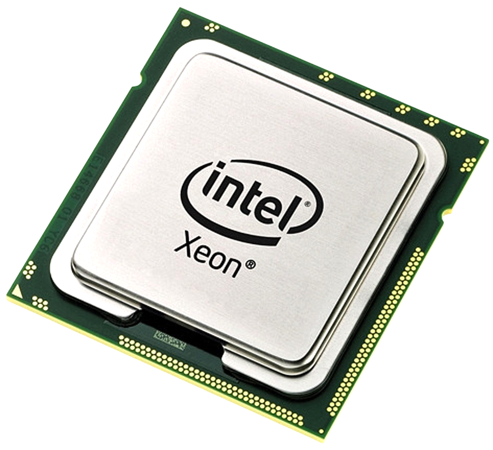
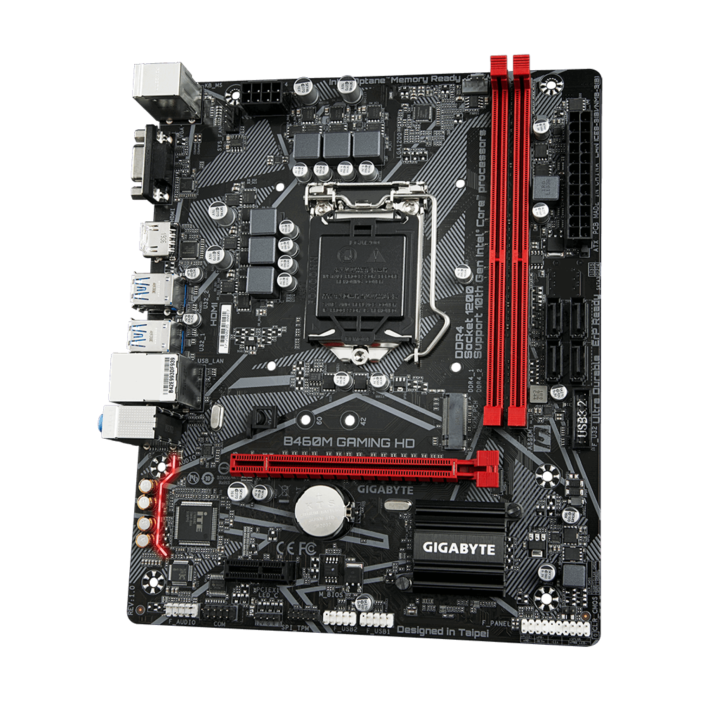
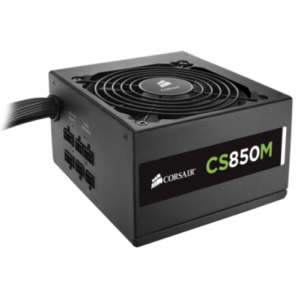
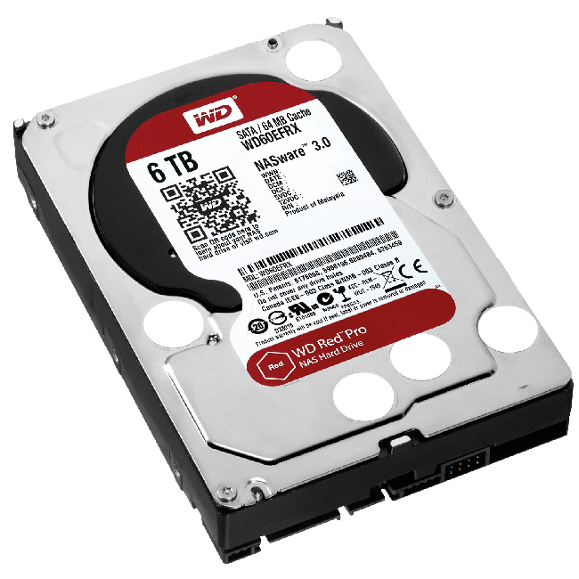
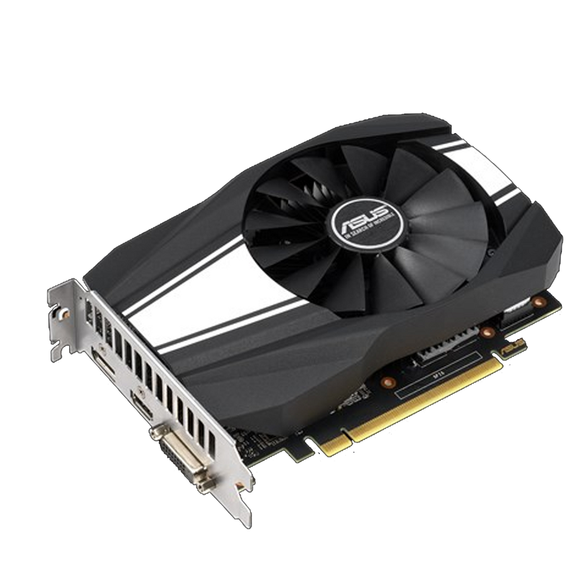

Hardware
Hardware é toda parte física de um computador, formada por
componentes eletronicos, fios, placas ou qualquer outro material em estado físico
que componha o computador.
A seguir será demonstrados os principais e mais importantes hardwares internos de um computador, e quais suas funções.
Processador ( CPU )

Processador é o componente que efetua os cálculos necessários para realização
de tarefas do cotidiano, como o cérebro do computador, processando dados e transformando
em informação.
Placa-mãe

Placa-mãe é nada mais que uma central de comunicação. Nela estão todos os componentes
do computador conectados. Sendo considerado um dos componentes mais importantes
para o bom funcionamento do computador.
Fonte de energia

A fonte de energia de um computador é responsável por converter a voltagem da energia
elétrica das tomadas em voltagens menores, suportadas pelos computadores.
HD

Disco rígido ou disco duro, popularmente chamado também de HD, "memória de massa" ou "memória secundária", é a parte do computador onde são armazenados os dados.
Memória RAM

RAM é uma abreviação de "Memória de acesso aleatório", ela é a responsável por
armazenar dados temporários, servindo como uma memória funcional do computador.
Placa de vídeo ( GPU )

A placa de vídeo é o componente do computador responsável por gerar as imagens vistas
em tela, também conhecida como GPU. A GPU recebe instruções e dados sobre a exibição de
uma imagem da CPU.
Software
Software são instruções escritas em sequência para a interpretação de um computador,
para que se possa executar tarefas específicas. Em resumo, são todos os componentes
virtuais ( não físicos ), visualizados por imagens, sons e etc.
Exemplos de software:
Bloco de notas

Bloco de notas é um editor de texto incluído em todos os sistemas operacionais,
utilizado para realizar anotações, marcações, modificar textos e etc.
Google Chrome

Google Chrome é um navegador(plataforma utilizada para acessar caminhos web), criada
pela google com o intuito de ser multiplataforma ( celular, computador e etc), e facilitar
a navegação web por todo o mundo.
Outros exemplos de navegadores: Firefox, Opera, Edge...
Spotify

Spotify é um serviço de música multiplataforma que conecta usuários à suas músicas
favoritas a qualquer momento, criada em 2008 se tornou uma das maiores plataformas
de streaming de música da década.